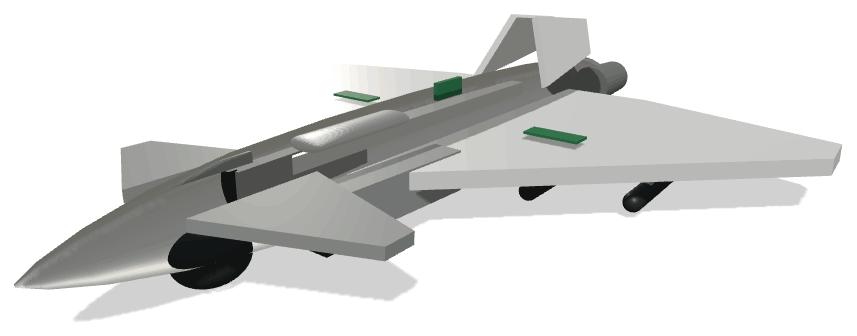
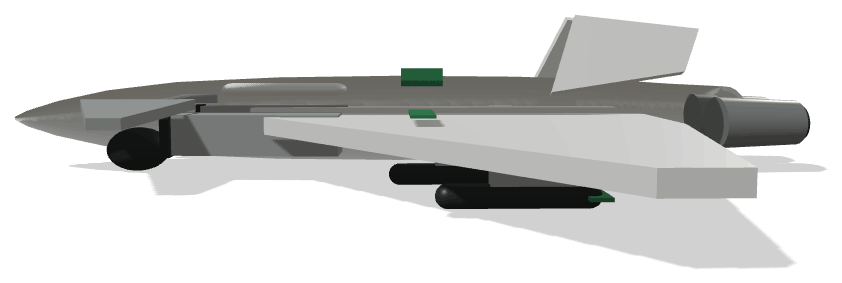
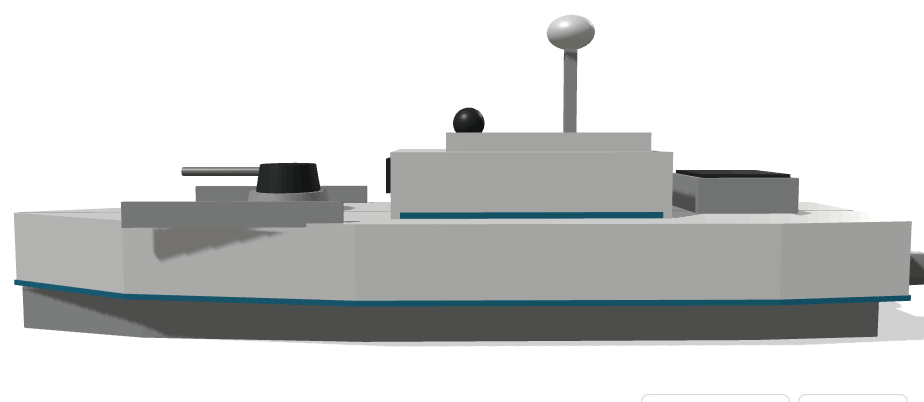
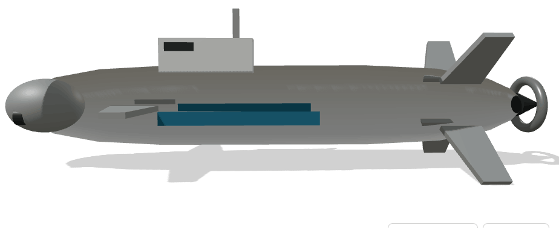
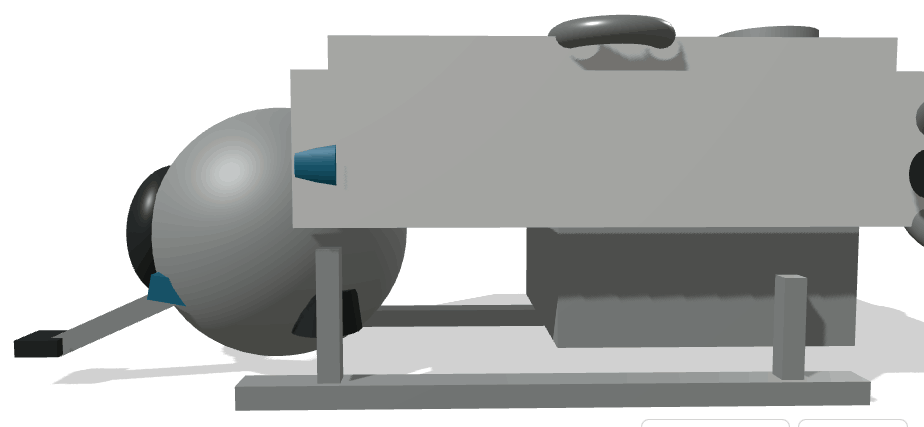

Sete plataformas.
Um hub. Um fundo.
Uma proposta para Portugal produzir os sistemas autónomos de que precisa — em vez de os importar.

Portugal já gasta mais de seis mil milhões por ano em defesa. A decisão que falta não é quanto gastar — é onde esse dinheiro é produzido.
Em 2025 a despesa nacional em defesa chegou a 6 118 milhões de euros e a meta acordada é 5% do PIB até 2035. Sem base industrial própria, esse aumento converte-se em importação: emprego, propriedade intelectual e manutenção ficam fora do país.
O mesmo vale para o combate a incêndios, para a vigilância da maior zona económica exclusiva da Europa e para o enterramento da rede eléctrica. São quatro problemas nacionais com a mesma resposta industrial.
Quatro militares, três civis
Cada plataforma tem um modelo tridimensional para inspecção livre e um memorando de duas páginas com ficha técnica.

OpenDrone_AM
Reconhecimento persistente e ataque de precisão. Envergadura 20,1 m, autonomia 27 h.

OpenDrone_AM_S
Ala voadora de baixa observabilidade para vigilância e guerra electrónica. Mach 0,80.

OpenDrone_AC_B
Contenção de ignições nos primeiros minutos. 3 000 L de água, recarga em 12 minutos.

OpenDrone_AQM
Intercepção rápida na zona económica exclusiva e nas vias fluviais. 45 nós, 900 nmi.

OpenDrone_AQM_S
Patrulha silenciosa e protecção de cabos e condutas no fundo do mar. 30 dias de missão.

OpenDrone_AQM_I
Cartografia e intervenção até 4 000 m, com manipulador de seis eixos.
Três funções, um perímetro
A razão de estarem juntas é o ciclo de iteração: um problema detectado no ensaio de manhã é corrigido na linha à tarde.
Compósitos, integração de sensores e linha comum às sete plataformas.
Espaço aéreo segregado, tanque de pressão e acesso a mar aberto para ensaio.
240 engenheiros e técnicos por ano, com seis universidades e politécnicos parceiros.
Uma contribuição única, um fundo permanente
Uma contribuição sectorial extraordinária de um ano sobre banca, telecomunicações, retalho alimentar e energia dota um fundo soberano que financia desenvolvimento contra marcos verificados.